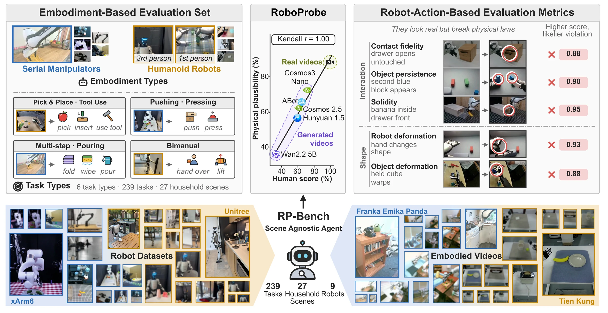
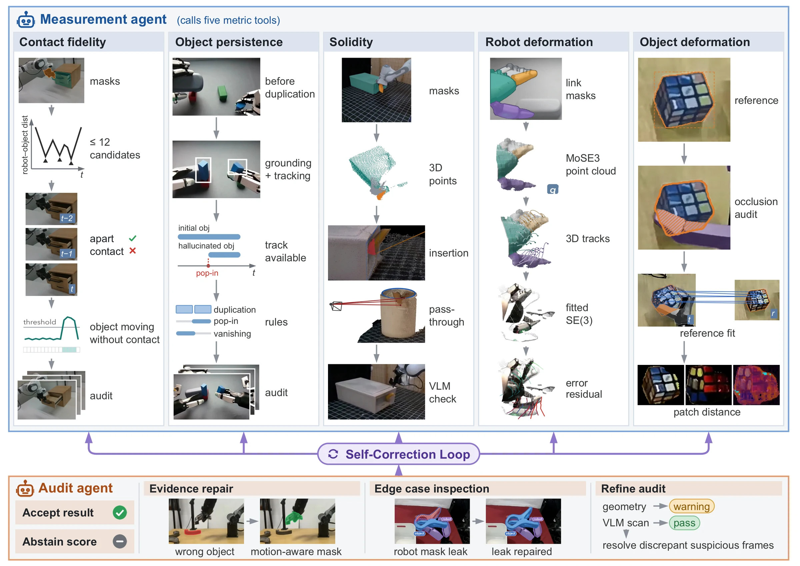
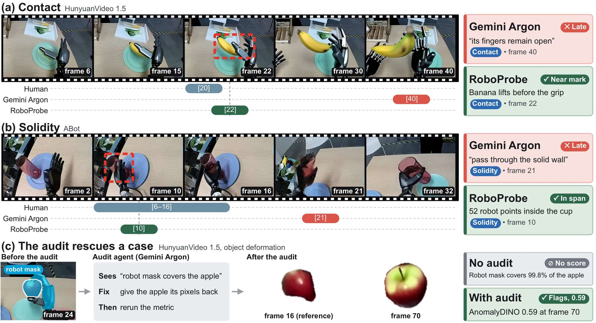
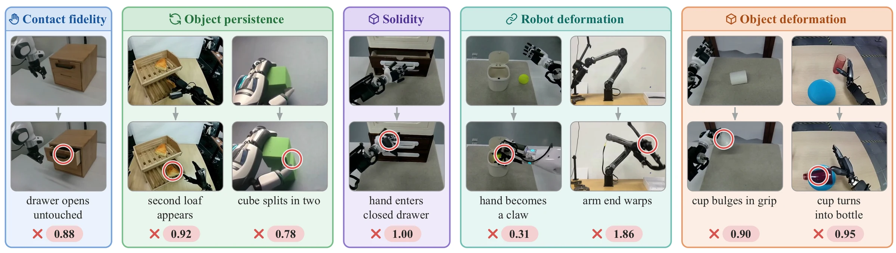

Overview
RP-Bench and RoboProbe at a glance
The benchmark, the agreement with human judgments per generator, and one violation per law.

Figure 1. Generated robot videos look real but break physical laws. Left, the benchmark covers serial manipulators and humanoids in first- and third-person views. Middle, for each generator, the share of videos that RoboProbe finds plausible against the share the annotators do on the 130 shared tasks; the rankings agree (Kendall τ = 1.00). Right, one generated video per violation type, with the violation circled in red and the metric's score, a higher score meaning a likelier violation.
Videos behind Figure 1
The five generated videos of the figure's right panel, with the description and score printed there.
Paper
Abstract
Evaluating the physical plausibility of generated videos is critical for reliable robotic planning with world models. These videos inform action proposal and assessment before real-world execution, so undetected physical violations can lead to erroneous assessments of action feasibility and safety. Yet current video generators often produce physically implausible interactions. Detecting such violations directly with vision-language models (VLMs) remains challenging as physical verification requires evidence-grounded spatiotemporal reasoning beyond high-level semantic understanding. We develop five law-specific metrics for evaluating physical plausibility by combining spatiotemporal evidence from segmentation, tracking, 3D geometry, or appearance comparisons with targeted VLM reasoning: Contact fidelity, Object persistence, Solidity, Robot deformation, and Object deformation. Building on this metric suite, we introduce RoboProbe, an agentic evaluation framework that coordinates metric execution and selectively refines evaluations through constrained actions. To evaluate the physical plausibility of robot world models, we further introduce RP-Bench, with 761 human-labeled generated videos and 130 real demonstrations of 239 manipulation tasks from 12 robot datasets. On RP-Bench, all five metrics achieve AUROCs above 0.85 and outperform the evaluated learned judges, prior evaluators, and a frames-only Gemini baseline. Applying these metrics to five video generators reveals distinct patterns of physical violations across models, in both violation types and frequencies.
Method
Five metrics, run as tools of agents
The five metrics run as tools of a measurement agent; an audit agent checks the evidence behind each score.

Figure 2. RoboProbe runs its metrics as tools of agents. A measurement agent calls five metric tools, one per law. An audit agent then checks the evidence behind each score, without seeing scores or labels, and either accepts the result, abstains, or starts evidence repair, edge-case inspection or audit refinement, after which the metric reruns.
The five laws
A higher score means a more likely violation. Details are in Sec. 3 of the paper and in the supplement.
Contact fidelity
An object should start to move only after the robot touches it.
Point tracks find when the object moves; a VLM judges contact on close crops of the frames where gripper and object come closest. Motion with no plausible contact before it is a violation. A Gemini audit of 16 frames is fused in by percentile rank.
Examples →Object persistence
An object should never duplicate, appear from nowhere or vanish.
Tracks of the manipulated object score duplication, pop-in and vanishing; a Gemini audit of 16 frames covers every other object. The two are averaged by percentile rank.
Examples →Solidity
An object should not pass through a solid surface or become embedded in it.
Masks and 3D point clouds of the moving and the static object find the frames at risk of pass-through or insertion; Gemini then judges those frames with the safe frames before them.
Examples →Robot deformation
Joints articulate, but each robot link must stay rigid.
Each link's tracked 3D points are aligned to a reference frame by one rigid transform. The residual it cannot explain, divided by the link length, is the score, taken at the worst frame.
Examples →Object deformation
A rigid object should keep its shape and appearance while the robot handles it.
With the robot's pixels removed, the object in each frame is compared patch by patch with a clean reference view. The score averages this with Gemini's rating of the whole video.
Examples →Results
Results on RP-Bench
Per-video AUROC against the human labels, and how far the reported frame lies from the annotated one.
| Law | Videos / positives | RoboProbe AUROC | Gemini 4 Argon AUROC | Frame error, RoboProbe / middle frame |
|---|---|---|---|---|
| Contact fidelity | 884 / 311 | 0.889 | 0.800 | 4 / 20 |
| Object persistence | 880 / 177 | 0.957 | 0.919 | 5 / 31.5 |
| Solidity | 884 / 154 | 0.894 | 0.781 | 3 / 20 |
| Robot deformation | 767 / 480 | 0.851 | 0.795 | 0.5 / 23 |
| Object deformation | 802 / 247 | 0.881 | 0.843 | 7 / 13 |
| Average | 0.894 | 0.828 | 3.9 / 21.5 |
From Table 1 of the paper. RoboProbe with the agent in the loop; Gemini 4 Argon sees 16 uniformly sampled frames and a violation-specific question. Frame error is the median |reported − annotated frame| over the annotated positives with a reported frame, against always guessing the middle frame.

Figure 3. RoboProbe localizes contact and solidity violations, and its audit rescues a missed case. (a, b) Lanes show the human mark, the frame our metric reports and the frame Gemini 4 Argon names. Our frame comes from the geometry: in (b), robot points found inside the cup. The red box marks that frame. (c) The robot mask covers the apple, so no frame can be compared until the audit agent's edge-case inspection gives the apple its pixels back.
Videos behind Figure 3
The three videos of the figure. The buttons jump to the frames the figure shows.
Supplement
Detections across the five laws
From the supplementary material. The videos below show more examples per law.

The metrics detect violations of all five laws. Eight labelled violations in the evaluation set, grouped by law. Each column shows an earlier frame above the violation frame, a red circle marks the violation and the pill gives the metric's score.
Example videos
Labelled violations, law by law
Each clip is a generated video labelled a violation of the law shown. Under each clip, a timeline marks when the annotator saw the violation start, the frame RoboProbe reports and the frame the frames-only Gemini baseline names.